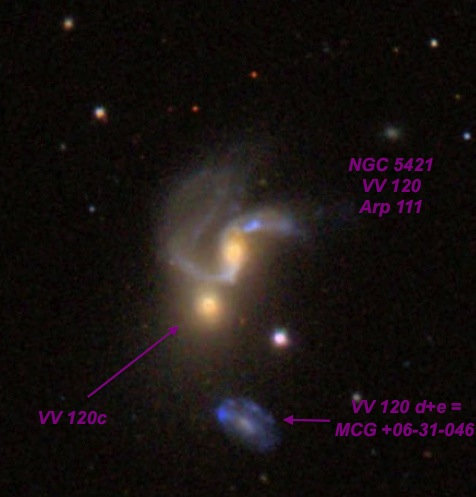
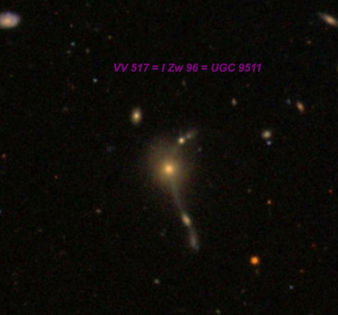
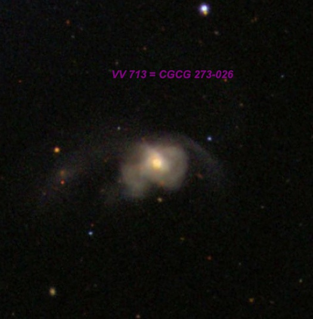
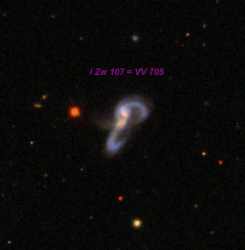
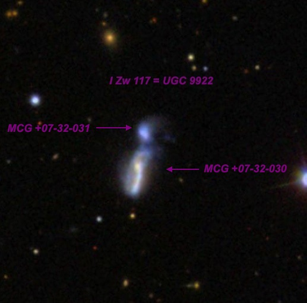
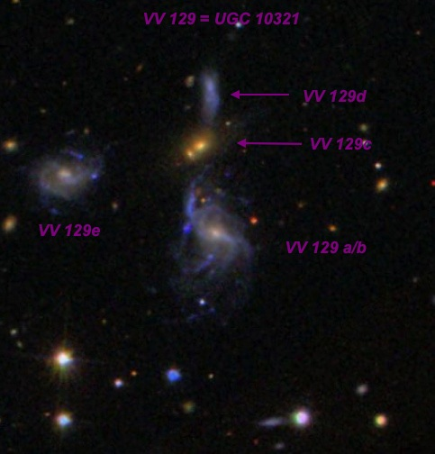
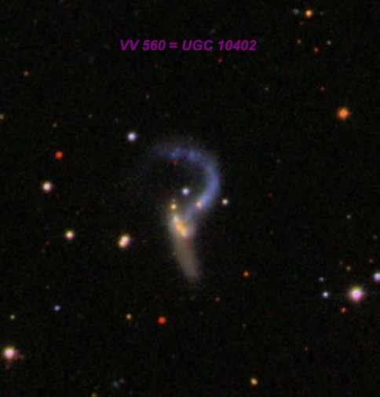

VV interacting galaxies and Zwicky compacts eruptive galaxies
Steve GottliebDecember 2013
OR: 7/5/13 - 7/9/13
VV interacting galaxies and Zwicky compacts/eruptive galaxies
Steve Gottlieb
Here are some observations of interesting galaxies I made earlier in July at the Golden State Star Party with my 24" f/3.7 Starstructure. All nights of the star party were clear --
probably a first -- and SQM readings were generally in the 21.5-21.6 range. Recently, one of my observing projects has been targets from Russian astronomer Boris
Vorontsov-Velyaminov's 1959 "Atlas and Catalogue of Interacting Galaxies", which contained photographs of 355 systems, the majority of which he discovered on Palomar Observatory Sky
Survey plates (1949-1956). Up to that point, extragalactic research had focused predominately on "well-behaved" spirals and ellipticals, but Vorontsov-Velyaminov was fascinated by
interacting and merging galaxies (both M51 -type and multiple systems), bridges, tails, condensations and fragments.
V-V's atlas, published by the Sternberg Astronomical Institute in Moscow and not easily accessible, never received the widespread recognition it deserved. But it caught the
attention of Halton Arp and was instrumental in the development of his "Atlas of Peculiar and Interacting Galaxies" (1966), with over half of the 338 entries in Arp's catalogue
appearing earlier in V-V's 1959 publication. In 1977 Vorontsov-Velyaminov published part II of his catalogue and atlas, expanding his list of interacting systems to 852.

VV 120 = Arp 111 = NGC 5421
14 01 41.4 +33 49 35
At 282x, this interacting pair appeared moderately bright, fairly small, elongated 3:2 NNW-SSE but irregular. Contains a very small, bright nucleus. A non-stellar knot
companion ( VV 120c ) appearing like a second bright "nucleus" was visible at the southeast end of the halo. At 322x, VV120c was easily resolved and appeared faint to fairly
faint, very small, round, 10" diameter. A mag 15 star is just off the southwest side. MCG +06-31-046 = VV 120d+e at mag 17.1V, is just 1' S of the pair and was glimpsed
several times for brief moments and confirmed at 322x.

I Zw 96 = VV 517 = UGC 9511
14 44 53.6 +51 20 28
V = 15.3 B = 16.0
At 280x and 375x appeared very faint, very small, round, low even surface brightness, 15" diameter. Can just hold steadily with averted and concentration. 2MASX
J14450375+5121557, situated just 2.1' NE, was not seen. CGCG 273-026 = VV 713 lies 16.5' NNE and ?1871, a perfectly matched 1.8" pair of mag 8 stars, lies 31' WNW. Described by
Zwicky as a "Red post-eruptive globular compact with extended halo, pencil jets and associated faint stellar knots.

VV 713 = CGCG 273-02614 45 45.1 +51 34 51
V = 13.8 B = 14.6
At 282x appeared fairly faint, small, slightly elongated, ~20"x15", very small brighter nucleus increases to the center, fainter halo. Situated midway between mag 8.6 HD
130370 3.4' NE and a mag 11 star 3.3' SW. I Zw 96 = VV 517 lies 16.5' SSW. On the SDSS this appears to be a possible merged system with tidal tails to the west and east,
although only one nucleus is visible

I Zw 107 = VV 705 = CGCG 221-050
15 18 06.3 +42 44 36
At 282x this tight interacting pair appeared fairly faint, fairly small, oval 3:2 NNW-SSE, ~20"x14". A very small brighter nucleus appears offset to the east side of the glow. A
mag 15.8 star lies 35" ENE and a mag 16.0 star is 1.3' S. Located 14' NE of mag 7.5 HD 136115 . On the SDSS there is a tight pair of nuclei, separated by only 6" and this object
appears to be a merging pair of compacts with tidally distorted arms that loop and intersect each other.

I Zw 117 = UGC 9922
15 35 53.7 +38 40 40
At 322x this interacting pair of compact galaxies was just resolved. The brighter (starburst) component is on the south end and appeared fairly faint, fairly small, elongated
N-S, ~24"x12", contains a very small brighter nucleus offset towards the north end. A very faint, extremely small companion is barely detached in steady moments at the north
end, appearing as an 8" round knot. Generally, though, the two objects blend together into a single elongated glow.

VV 129 = UGC 10321
16 18 05.3 +21 33 13
At 282x, three components of VV 129 were resolved. VV 129a = UGC 10321 NED01, the brightest member, appeared very faint, small, round, 18", visible continuously. VV 129c , just
35" N, appeared extremely faint, small, round, 10" diameter. VV 129e = MCG +04-38-047 lies 1.1' NE and appeared extremely faint (V = 16.2), very small, round, 12" diameter.
Could not hold continuously but repeatedly seen and confirmed. A quartet of mag 14-15.5 stars (similar size to VV 129) is less than 2' S. CGCG 137-077 lies 10' E and 2MASX
J16180582+2128229 is 5' S.

VV 560 = UGC 10402
16 28 41 +12 45 57
At 282x appeared as a faint, elongated glow with a brighter elongated knot oriented N-S on the south side. The fainter northern component occasionally resolved into a very
faint, very small glow, ~10" diameter. VV 560 is an interacting pair of disturbed spirals. On the SDSS, the pair has a "Sickle" shape, with the fainter curved section at the
north end and the elongated "handle" at the south end.
I Zw 199
17 50 05.1 +56 40 27
At 320x, I Zw 199 appeared as a fairly faint, fairly small, round, irregular glow, ~30"x20" SW-NE with a small "knot" at the southwest end. Occasionally, a very close pair of
compacts were resolved. The northeast compoment ( MCG +09-29-040 ) was larger (~20") and brighter (V = 14.7). The fainter southwest knot ( MCG +09-29-039 ) was only 10"-12" in size
and more sharply defined. The centers of these compacts are separated by only 20"!